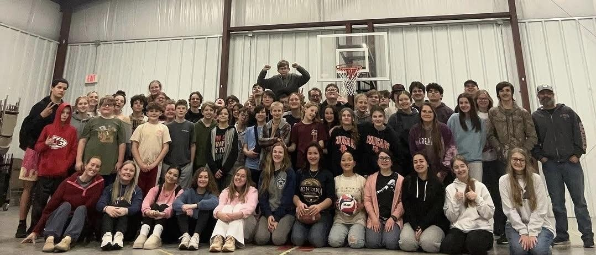
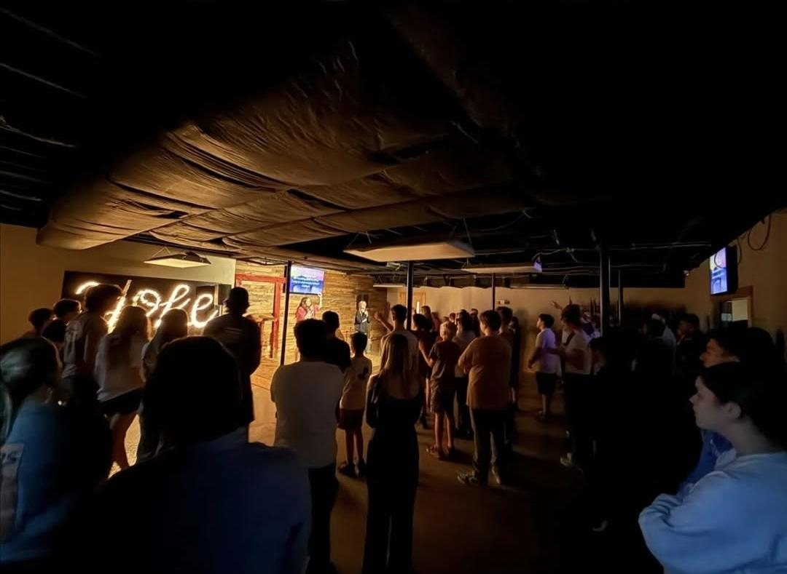
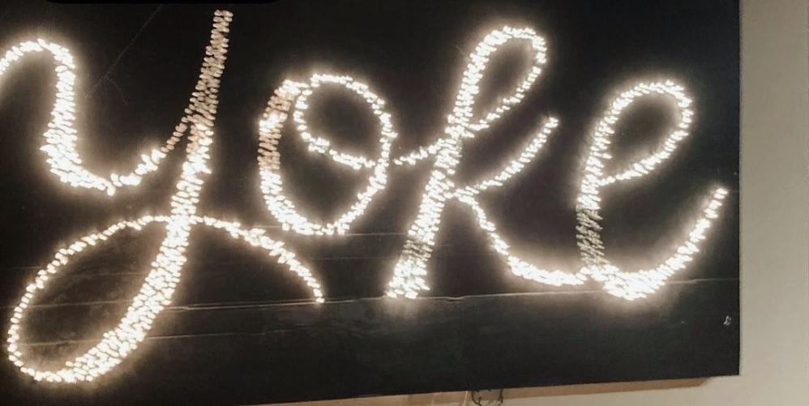
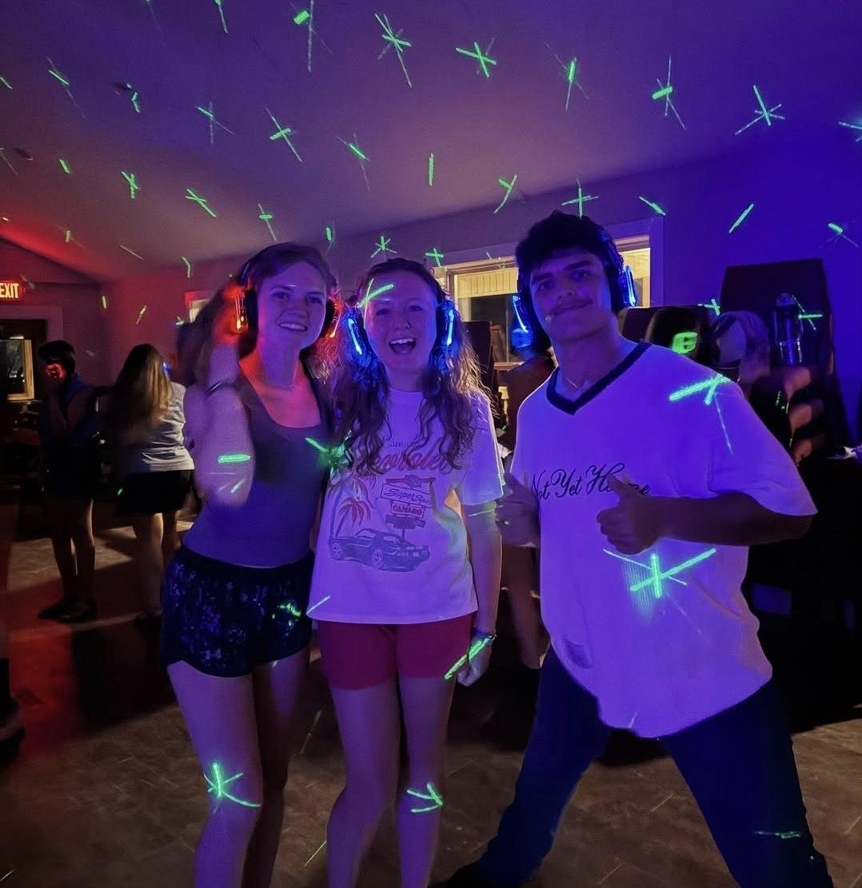

Sunday
Sunday School 9:00 AM
Worship 10:00 AM
Whether you’re visiting for the first time or searching for a church home, we invite you to worship with us at Burns Baptist Church. You’ll find a church family committed to God’s Word, sharing the Gospel, and encouraging one another in faith.
Sunday School 9:00 AM
Worship 10:00 AM
Worship 6:30 PM
Kids Connection 6:30 PM
When you visit Burns Baptist Church, you’ll be welcomed by a church family that loves the Lord and enjoys worshiping together. Our services include singing, prayer, and preaching from God’s Word. As a Southern Baptist church, we believe in sharing the Gospel and helping others grow in their relationship with Jesus Christ. We would love to get to know you!
Sunday School and Kids Connection provide opportunities for children to learn about God’s Word and grow in faith.
Questions before you come? Call 615-441-3378 or email burnsbaptistclerk@gmail.com.
Look for the brick church with the white steeple and the parking lot at 2308 Hwy 96. The church next door, at 2300, is a different congregation.
Wednesdays, 6:00 to 8:00 PM | Youth Pastor Mason Cook
YOKE is our student ministry. Doors open at 6:00. Students meet in the downstairs sanctuary, and there is food in the Family Life Center.




Sunday School 9:00 AM | Worship 10:00 AM